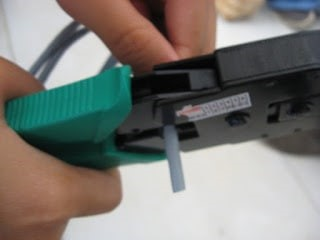
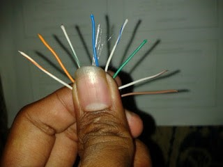
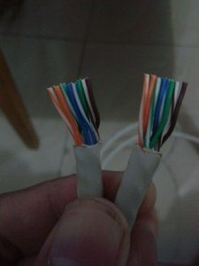
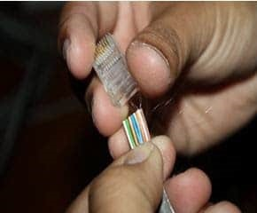
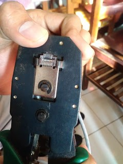
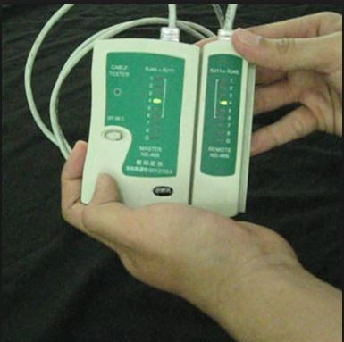
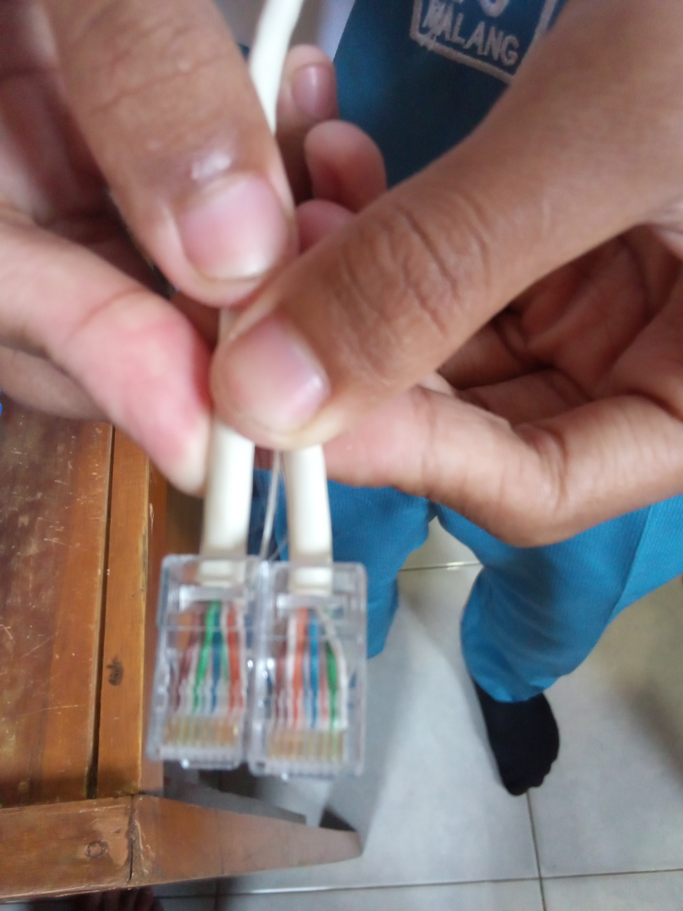

1. Langkah pertama siapkan alat-alat seperti: KABEL UTP, KONEKTOR RJ45, TANG CRIMPING, LAN TESTER
2. Kemudian kupas kabel bagian luar sekitar 2cm dan potong kabel UTP bagian dalam secara rata. 
3. Setelah urutkan kabel UTP bagian dalam dengan urutan sebagai berikut: putih-jingga, jingga, putih-hijau, biru, putih-biru, hijau, putih-coklat, coklat untuk susunan kabel straight dan untuk kabel cross sebagai berikut: putih-hijau, hijau, putih-jingga, biru, putih-biru, jingga, putih-coklat, coklat.  
4. Lalu luruskan dan ratakan ujung kabel agar bisa dimasukkan ke konektor RJ45 dengan mudah.
5. Kemudian masukkan kabel ke konektor RJ45 dan pastikan ujung semua kabel mennyentuh ujung konektor RJ45.

6. Setelah itu crimping menggunakan tang crimping.

7. Langkah terakhir uji kabel menggunakan lan tester. 
8. Dan hasilnya akan seperti ini:  Untuk lebih jelasnya silahkan download file berikut: